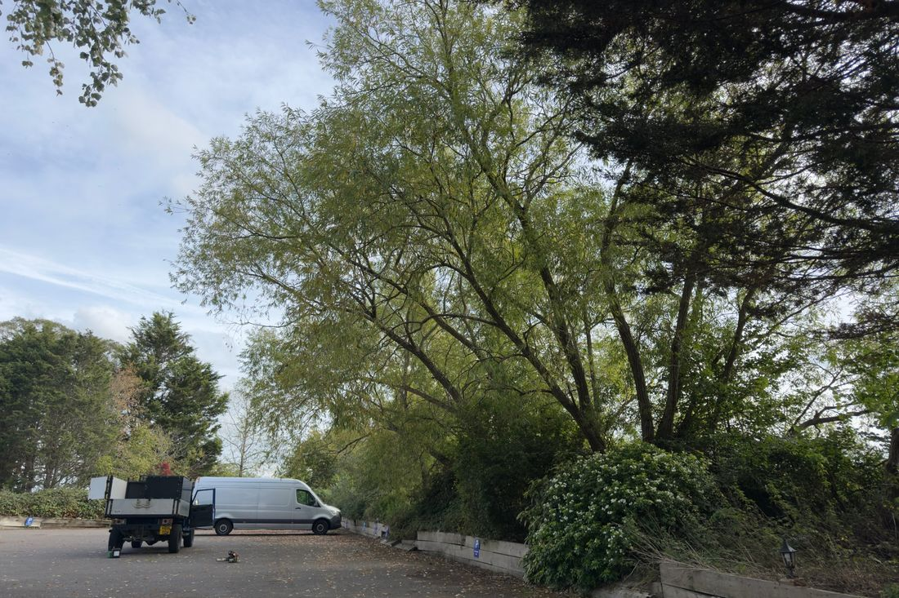
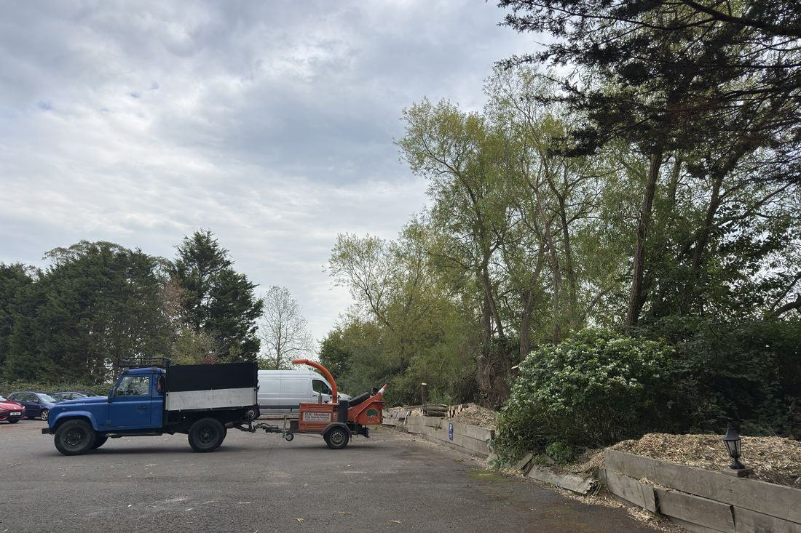
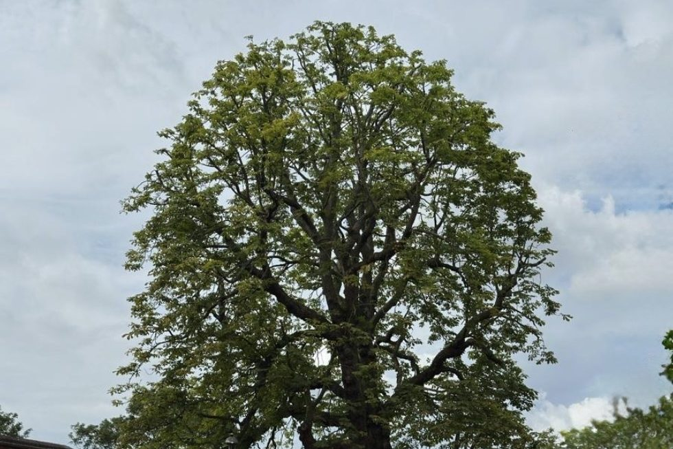
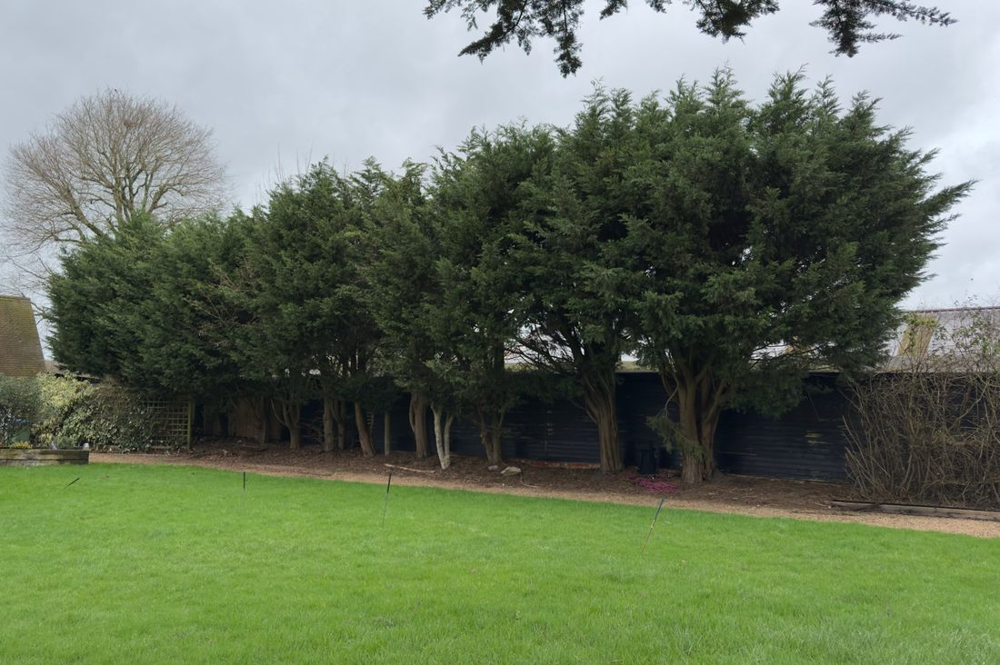
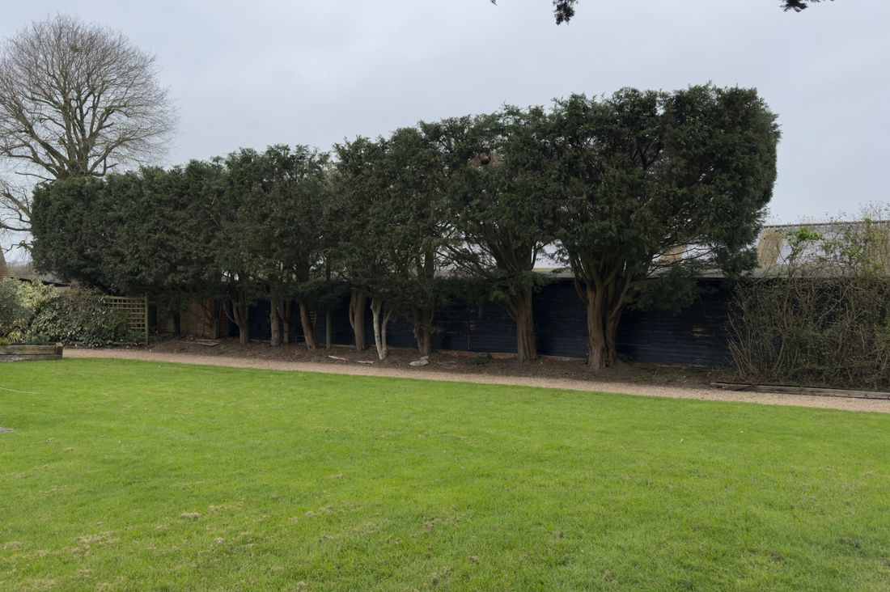
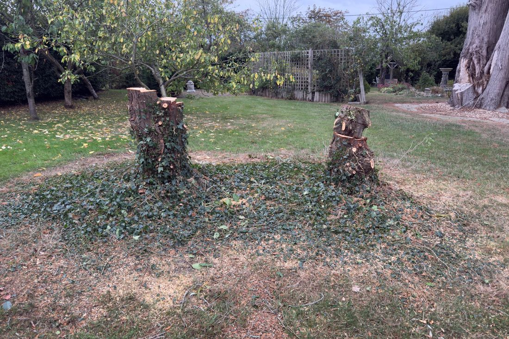
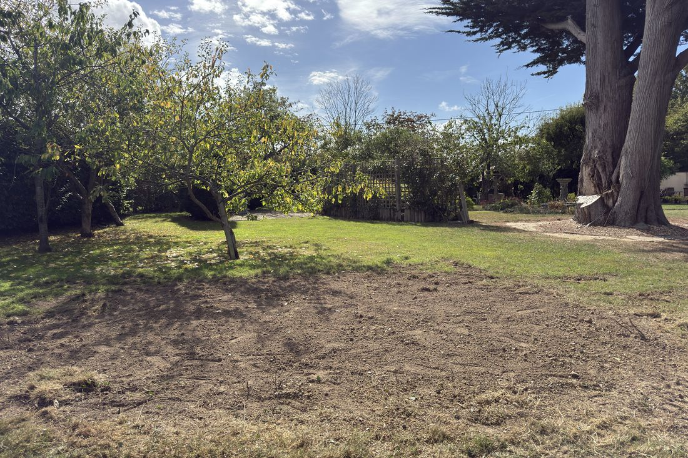
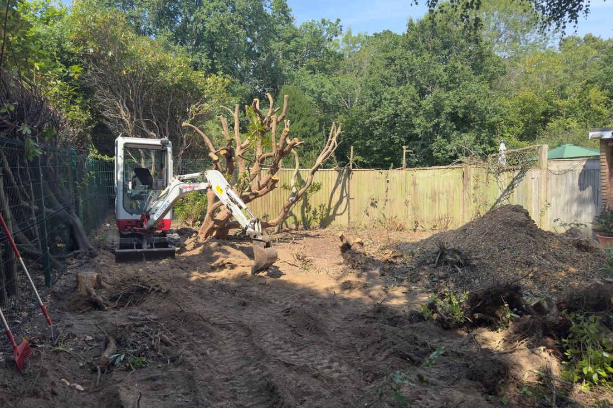
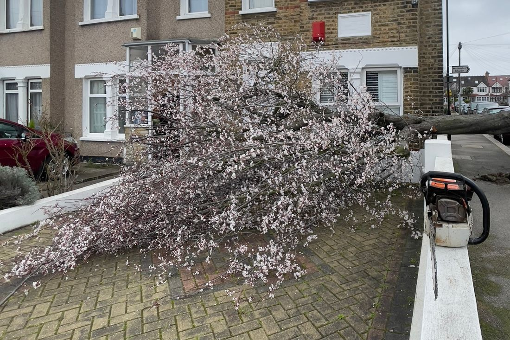

Tree removal
Whole trees taken down safely, whether that means a straight fell or dismantling the tree in sections where space is tight.
Hover over or tap the photo to see the after.

Crown reduction and pruning
We reduce the size of the crown, thin out dense growth and lift low branches, to let in light and keep the tree healthy, balanced and in proportion.


Hedge cutting
From garden borders to tall boundary screens, we cut and shape hedges neatly. We can cut back an overgrown hedge in one go, or keep it in shape with regular trimming.
Hover over or tap the photo to see the after.


Stump removal
We remove stumps by grinding them out or by excavating them with a digger. Tell us where the stump is and what you plan to do with the space, and we will recommend the best way to deal with it.
Hover over or tap the photo to see the after.

Site clearance
Clearing overgrown gardens, plots and land of trees, scrub and brush, ready for building, landscaping or fresh planting.

Woodland management
Care for larger areas of woodland, including thinning, coppicing and clearing, to keep it healthy and well managed.
Ash dieback management
Ash dieback is changing the West Sussex landscape. We inspect ash trees and advise whether each one should be kept, reduced or taken down, carry out the safe felling and reduction work, and help with replanting afterwards.

Planting
From a single garden tree to a group of trees or a new hedge, we help you choose species that suit your soil and space, then plant them properly with the right stakes, guards and mulch so they establish well.

Emergency call-outs
Storm damage, fallen trees or dangerous branches? Call Max on 07719 724463 and we will get to you as soon as we can.
Not sure what you need?
Send Max a photo of the tree or hedge on WhatsApp and he can talk you through the options.